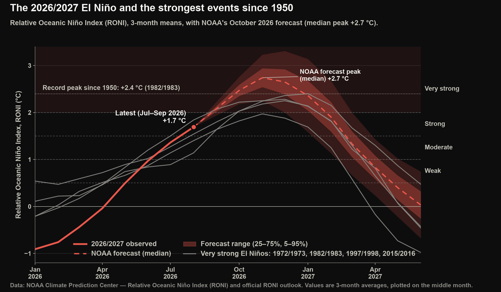

El Niño 2026/2027 · Overview
The 2026/2027 El Niño in historical context
A strong El Niño (A periodic warming of the central and eastern equatorial Pacific Ocean, with related changes in winds and rainfall, recurring every two to seven years.) is developing in the equatorial Pacific. This overview summarises how it compares with every El Niño since 1950 and what NOAA expects next; the other El Niño tabs look in detail at the sea surface, the ocean below it, Kelvin waves (Pulses of warm water that travel east along the equator beneath the surface, crossing the Pacific in about two months.), and records and forecasts.
Start here: El Niño in one minute
Normally, steady trade winds blow west across the tropical Pacific, piling warm water near Asia and Australia, where it fuels heavy rain. Off South America, cold water rises from below and keeps the surface cool.
During El Niño, the winds weaken, and the warm water and its rainfall spread east. The ocean off South America warms by several degrees, and the shift in tropical rainfall alters weather patterns around the world, including the winter storm track over California.
Reading this page. Most figures show anomalies: how much warmer (red) or cooler (blue) than the 1991–2020 average the ocean is for that time of year. Maps of actual temperature use a rainbow scale in which dark red is warmest. Underlined terms show a short definition when you hover over or tap them.
Learn more: NOAA ENSO Blog · What is El Niño? (NOAA PMEL) · NOAA's monthly ENSO diagnostic discussion
What's happening now
- Current strength
- NOAA's Relative Oceanic Niño Index (NOAA's official El Niño index (RONI): the Niño 3.4 anomaly measured relative to the average of the whole tropical ocean, so that general warming is not counted as El Niño. Three-month averages.) reached +1.7 °C for Jul–Sep 2026, a strong El Niño. The monthly Niño 3.4 (A region of the central equatorial Pacific (5°S–5°N, 170°W–120°W) whose temperature is the main measure of El Niño.) anomaly (The difference from normal (the 1991–2020 average) for the same time of year; +2 °C means 2 °C warmer than usual.) was +2.8 °C in September.
- Compared with past events
- In September, Niño 3.4 (+2.8 °C, against +1.8 °C in 1997/1998) and Niño 1+2 (The region off the coasts of Peru and Ecuador (10°S–0°, 90°W–80°W).) (+4.7 °C, against +3.6 °C in 1997/1998) are warmer than in 2015/2016, 1997/1998 and 1982/1983 at the same point in the year.
- Below the surface
- In September, the upper 200 m of the central and eastern equatorial Pacific was +4.6 °C above normal, compared with at most +3.2 °C (1997/1998) in past very strong events at the same stage.
- Forecast
- NOAA's October 2026 outlook gives a 100% probability of a very strong event (≥ +2.0 °C), with a median forecast peak of +2.7 °C in Oct–Dec 2026, above the 1950–present record of +2.4 °C (1982/1983).
- Southern California
- Coastal waters have recorded 229 marine heatwave (A spell of at least five days when sea surface temperature is above the 90th percentile for the time of year (Hobday et al., 2016).) days in 2026 through 2 October, the most on record for the date. NOAA's outlook gives Los Angeles a 50–60% chance of a wetter-than-normal December–February.
Computed from the latest NOAA data when this page was built (October 30, 2026).
Why this El Niño stands out
The key findings, recomputed from the latest NOAA data at every update.
- Warmest El Niño on record at this stage In September, the Niño 3.4 anomaly was +2.9 °C, against a previous high of +2.2 °C (2015/2016) among the 22 El Niño events since 1950 at the same point in the year.
- Fastest development since 1950 Niño 3.4 has warmed by 3.4 °C since January, more than any previous El Niño over the same months (previous largest: 2.7 °C in 1997/1998).
- Record warmth across the whole equatorial Pacific At their peaks, past very strong events were strongest either near South America (1982/1983, 1997/1998) or farther west (2015/2016). In September, the current event is the warmest on record at this stage in all four Niño regions (previous high in brackets): Niño 4 (The western-central equatorial Pacific, 5°S–5°N, 160°E–150°W.) +1.2 °C (+1.1 °C), Niño 3.4 +2.9 °C (+2.2 °C), Niño 3 (The eastern equatorial Pacific, 5°S–5°N, 150°W–90°W.) +3.7 °C (+2.8 °C), Niño 1+2 +4.4 °C (+3.8 °C).
- Far more heat below the surface In September, the upper 200 m of the equatorial Pacific (180°–80°W) was +4.6 °C above normal, against a previous high of +3.2 °C (1997/1998) among the 13 El Niño events since 1980. This reservoir of heat can sustain surface warming over the coming months.
- Most water above 28 °C on record for the time of year In September, the equatorial Pacific (5°S–5°N) held 13.7 × 10¹⁴ m³ of water warmer than 28 °C, the temperature at which the ocean can sustain heavy tropical rainfall, against a previous high of 10.6 × 10¹⁴ m³ (2023/2024) among the 13 El Niño events since 1980.
- Forecast to set a new record NOAA's October 2026 outlook places the median peak at +2.7 °C on the RONI scale, above the record of +2.4 °C set in 1982/1983.
Compared with every El Niño since 1950
How this event has developed compared with all 22 El Niño events since 1950, measured at the same point in the year.
At the latest month, 2026/2027 is warmer than every El Niño since 1950 at the same stage, both at the surface and in the upper ocean.

- What it shows
- Monthly Niño 3.4, Niño 1+2 and upper-ocean anomalies for every El Niño since 1950, aligned by onset year and drawn month by month; the box in each panel ranks the current event against all past events at the same stage.
- How it relates to El Niño
- Comparing every event at the same time of year shows whether 2026/2027 is an ordinary strong El Niño or is developing faster and further than past events, which helps judge how strong its peak may become.
- Data
- NOAA ERSST v5 (Niño 3.4 and Niño 1+2 sea surface temperature) and NCEP GODAS (upper-200 m temperature), anomalies from 1991–2020; El Niño events from NOAA CPC's Relative Oceanic Niño Index (RONI).
- Get the data
- ERSST v5 (NOAA PSL) · NCEP GODAS ocean reanalysis (NOAA PSL) · Relative Oceanic Niño Index (NOAA CPC)
Open the animation in a new tab · still image of the final frame
Download: Figure as shown (PNG) · Clean figure, no title (PNG) · Video (MP4)

How to read this figure
Each line is one El Niño. The horizontal axis runs from January of the year the event began to December of the following year; the vertical axis shows how much warmer than normal the water was. A line above the others at a given month means that event was further developed at that point in the year.
Pick a measure and a month to see where 2026/2027 ranks among every El Niño since 1950.
Show the data as a table
- What it shows
- Choose a measure, then move across the chart to compare all events month by month; the bars rank every event at the selected month. Select any gray line, or use the menu, to highlight another event.
- How it relates to El Niño
- Each measure captures a different part of El Niño: Niño 3.4 is the official yardstick, Niño 1+2 tracks the coast of South America, Niño 4 the western-central Pacific, and the upper ocean the stored heat that feeds the surface in the months ahead.
- Data
- NOAA ERSST v5 (Niño region sea surface temperature), NCEP GODAS (upper-200 m temperature), and NOAA CPC RONI with its official outlook; anomalies from 1991–2020.
- Get the data
- ERSST v5 (NOAA PSL) · NCEP GODAS ocean reanalysis (NOAA PSL) · Relative Oceanic Niño Index (NOAA CPC) · Official RONI outlook (NOAA CPC)
What comes next
NOAA's official forecast for the coming months.
NOAA's official outlook places the peak of this event above the strongest El Niño since 1950.

- What it shows
- Development of the 2026/2027 event in NOAA's Relative Oceanic Niño Index alongside the four strongest El Niño events since 1950, with NOAA's official forecast.
- How it relates to El Niño
- RONI is the index NOAA uses to declare an El Niño and its strength. The forecast shows how strong the event is likely to be at its winter peak, when its effects on North American weather are greatest.
- Data
- NOAA CPC Relative Oceanic Niño Index (RONI) and the official RONI outlook and strength probabilities.
- Get the data
- Relative Oceanic Niño Index (NOAA CPC) · Official RONI outlook (NOAA CPC) · El Niño strength probabilities (NOAA CPC)
Download: Figure as shown (PNG) · Clean figure, no title (PNG)


- Sea surface temperature: the warm water spreading east, compared with 2023/2024, 2015/2016, 1997/1998 and 1982/1983.
- Ocean heat below the surface: the warm water stored in the upper 200 m, in 3D and by temperature layer.
- Kelvin waves & sea level: the pulses of warm water that crossed the Pacific.
- Records & forecasts: how this event ranks, how well it was forecast, and global temperature.
What this means for Southern California
El Niño's effects reach California mainly through winter storms and coastal ocean temperatures. See Southern California heat for this year's summer and marine heat, and Southern California rainfall for NOAA's winter outlook and what past strong El Niño winters brought.